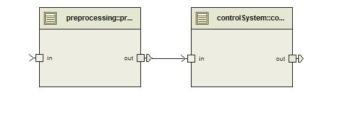
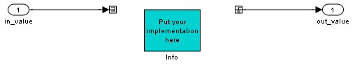
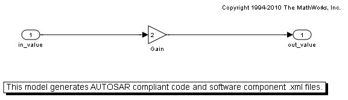
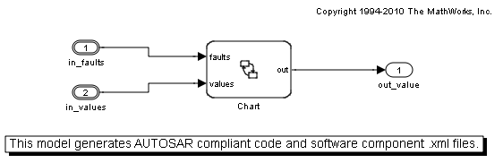
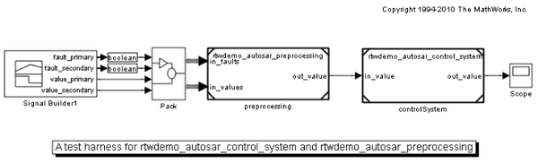
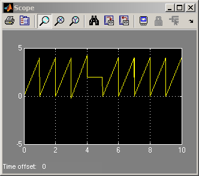

AUTOSAR ソフトウェア コンポーネントのインポートとエクスポート
このデモでは、Simulink® と共に AUTOSAR オーサリング ツールを使用して、AUTOSAR ソフトウェア コンポーネントを開発する方法を示します。 このデモでは、次の作業に取り組みます。
- AUTOSAR オーサリング ツールでソフトウェア コンポーネント インターフェイスを設計し、この情報を Simulink にインポートする
- 完成したソフトウェア コンポーネントを Simulink からエクスポートし、この情報を AUTOSAR オーサリング ツールに再びマージする
目次
AUTOSAR ソフトウェア コンポーネントの記述ファイルの概要
AUTOSAR ソフトウェア コンポーネントを構成する成果物を複数の XML ファイルに配布できます。 AUTOSAR オーサリング ツールまたは Simulink® を使用してファイルを作成できます。
ソフトウェア コンポーネント インターフェイスの設計
AUTOSAR オーサリング ツールを使用して、ソフトウェア コンポーネントに対して次の情報を定義できます。
- データ型
- 送信側/受信側、クライアント/サーバーのキャリブレーション インターフェイス
- ソフトウェア コンポーネントとそれぞれのポート (上記のインターフェイスにより入力)
このデモには、デモの目的に合わせて 2 セットのソフトウェア コンポーネント インターフェイスの XML ファイルが含まれています。
2 つのソフトウェア コンポーネントの AUTOSAR ビューを以下に示します。

AUTOSAR ソフトウェア コンポーネントの記述ファイルに必要な arxml.importer オブジェクトの作成
各ソフトウェア コンポーネントには、arxml.importer オブジェクトが必要です。 arxml.importer オブジェクトごとに、対象となるソフトウェア コンポーネントを含んでいるファイルを指定する必要があります。
preprocessingFileName = fullfile(matlabroot,'toolbox','rtw', ... 'rtwdemos','rtwdemo_autosar_preprocessing.arxml'); controlSystemFileName = fullfile(matlabroot,'toolbox','rtw', ... 'rtwdemos','rtwdemo_autosar_control_system_component.arxml'); preprocessingImporter = arxml.importer( preprocessingFileName ); controlSystemImporter = arxml.importer( controlSystemFileName );
ここで、ソフトウェア コンポーネントの記述を完成させる情報 (データ型やインターフェイスなど) を含んでいる追加のファイルを指定します。
controlSystemFileNameDep1 = fullfile(matlabroot,'toolbox','rtw', ... 'rtwdemos','rtwdemo_autosar_control_system_datatype.arxml'); controlSystemFileNameDep2 = fullfile(matlabroot,'toolbox','rtw', ... 'rtwdemos','rtwdemo_autosar_control_system_interface.arxml'); controlSystemImporter.setDependencies( { controlSystemFileNameDep1, ... controlSystemFileNameDep2 } );
Simulink モデル スケルトンの作成
これで、2 つのインポート オブジェクトを使用して、スケルトン Simulink モデルおよび関連するデータ型を作成できます。 スケルトン ファイルを作成したら、前処理するスケルトン モデルに、AUTOSAR ポート "in"の 2 つのデータ要素に対応する 2 つの入力があることを確認できます。 これらの入力には、データ要素を定義するための C 構造体データ型に対応するバス オブジェクトが関連付けられています。 障害入力は、一次と二次の 2 つの boolean 型要素を含んでいるバス オブジェクトから構成されます。 値入力は、一次と二次の 2 つの double 型要素を含んでいるバス オブジェクトから構成されます。
% Create the Simulink model skeletons preprocessingImporter.createComponentAsModel( '/ComponentType/preprocessing' ); controlSystemImporter.createComponentAsModel( '/ComponentType/controlSystem' ); % View all the imported AUTOSAR data types that you have imported who
Your variables are: Boolean UInt8 Boolean_pair ans Double controlSystemFileName Double_pair controlSystemFileNameDep1 Float controlSystemFileNameDep2 SInt16 controlSystemImporter SInt32 preprocessingFileName SInt8 preprocessingImporter UInt16 UInt32

Simulink モデル スケルトン内での機能の実装
一般に、制御エンジニアはこの時点で 2 つの Simulink モデルに実装を入力します。このデモでは、完成したモデルを開くことができます。
% open the completed models open_system( fullfile(matlabroot,'toolbox','rtw', ... 'rtwdemos','rtwdemo_autosar_preprocessing' ) ); open_system( fullfile(matlabroot,'toolbox','rtw', ... 'rtwdemos','rtwdemo_autosar_control_system' ) ); 
適用できるテスト ハーネスの作成
コントローラー機能にテスト ハーネスを作成することをお勧めします。 次のコマンドを使用してモデルを開いたら、[実行] ボタンをクリックし、スコープを表示します。
testHarnessFileName = fullfile(matlabroot,'toolbox','rtw', ... 'rtwdemos','rtwdemo_autosar_testharness'); open_system( testHarnessFileName ); sim( testHarnessFileName ); 
AUTOSAR ソフトウェア コンポーネントに対するコードのエクスポートと生成
テスト ハーネスの出力を確認したら、C コードを実装した AUTOSAR ソフトウェア コンポーネント ファイルをエクスポートします。ソフトウェア コンポーネントの XML ファイルがすべてコード生成時にエクスポートされます。
rtwbuild( 'rtwdemo_autosar_preprocessing' ); rtwbuild( 'rtwdemo_autosar_control_system' );
### Starting Real-Time Workshop build procedure for model:rtwdemo_autosar_preprocessing ### Generating XML files description for model:rtwdemo_autosar_preprocessing ### Successful completion of Real-Time Workshop code generation for model:rtwdemo_autosar_preprocessing ### Starting Real-Time Workshop build procedure for model:rtwdemo_autosar_control_system ### Generating XML files description for model:rtwdemo_autosar_control_system ### Successful completion of Real-Time Workshop code generation for model:rtwdemo_autosar_control_system
オーサーリング ツールへのマージ
これで、生成された AUTOSAR ソフトウェア コンポーネント ファイルを AUTOSAR オーサリング ツールにマージして、さらに改良するか、サインオフすることができます。マージを容易にするには、ソフトウェア コンポーネント情報を別々のファイルに入れます。たとえば、データ型のファイルと内部動作のファイルを作成します。このように分割することにより、実行する必要があるマージの回数が最小限に抑えられます。一般に、データ型ファイルはオーサリング ツールにマージする必要はありません。データ型は通常、設計プロセスの初期段階で定義されるからです。ただし、内部動作ファイルについては、その情報がモデル実装の一部となるので、マージしなければなりません。
たとえば、生成された AUTOSAR ソフトウェア コンポーネント ファイルを DaVinci System Architect (Vector Informatik GmbH) にマージするとします。
- DaVinci System Architect (2.3 以降) を実行します。
- 既存のワークスペースを開くか、新しいワークスペースを作成します。[ファイル] > [新規ワークスペース] を選択し、「Simulink_Demonstration」のようなワークスペース名を入力します。[開く]をクリックします。
- [ファイル] > [XML ファイルのインポート] > [追加] を選択します。
- モデル ビルド ディレクトリで生成されたすべての XML ファイルを検索します。
- [OK] をクリックします。
- さらに表示されたダイアログを受け入れます。
これで、内部動作の詳細な説明を含めて、ソフトウェア コンポーネントが正常にマージされました。結果を確認するには、ソフトウェア コンポーネントの実装タブに移動し、実行可能なエンティティの数を表示します。